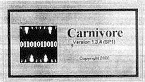

Burch, Dr. Neil/LSD and the Air Force: Smithsonian: Index and Institutional Notifications Subproject 1: MKULTRA: Plants Isolation and Characterization of Rivea Corymbosa Subproject 2: MKULTRA: Drugs Subproject 3: MKULTRA: Testing Subproject 4: MKULTRA: Mulholland's Manual Subproject 5a: MKULTRA Subproject 5b: MKULTRA: Denver University Hypnosis Subproject 6: MKULTRA: Testing of Plants by HEF Subproject 7: MKULTRA: Funding; ONR Probably Abramson Subproject 8: MKULTRA: Boston Psychopathic Hospital Subproject 9: MKULTRA: Depressants, Schizophrenics, Alcoholics Subproject 10: MKULTRA: Personality Assessment Subproject 11: MKULTRA: Botanicals Popkin (Documents and articles on Luis Angel Castillo) Subproject 12: MKULTRA: Financial Records Subproject 13: MKULTRA: CIA Support to Fort Detrick Subproject 14: MKULTRA: Paying Bureau of Narcotics for White Subproject 15: MKULTRA: Magic Support; Mulholland Supplement Subproject 16: MKULTRA: Testing Apartment Rental Subproject 17: MKULTRA: LSD Studies of [excised] University Subproject 19: MKULTRA: Magic Manual Subproject 20: MKULTRA: Synthesis Derivative of Yohimbine Hydrochloride Subproject 21: MKULTRA: Defector Study: originally Drug Study Subproject 22: MKULTRA: William Cook and Co. Research: Amanita Muscaria, Rivea Corymbosa Subproject 26: MKULTRA: Pfeiffer, Finances Subproject 27: MKULTRA: ONR Funding, LSD Research Subproject 28: MKULTRA: Pfeiffer Subproject 30: MKULTRA: Fort Detrick (1) Subproject 30: MKULTRA: Fort Detrick (2) Subproject 30: MKULTRA: Fort Detrick (3) Subproject 31: MKULTRA: Manufacture of Drugs by Pellow Wease Chemical Co. Subproject 32: MKULTRA: Collection of Plants Subproject 33: MKULTRA: Collection of 400 for SUBPR #27 Subproject 34: MKULTRA: More Support to Magic Subproject 35: MKULTRA: Georgetown Hospital: Geschichter Subproject 36: MKULTRA: Cuba Chapter Conference, Consultant, Subproject involving getting a man on a diverted freighter Subproject 37: MKULTRA: Collection of Botanicals
Subproject 38: MKULTRA Subproject 39: MKULTRA: Iowa State Hospital (and Ionia) Subproject 40: MKULTRA: Funding, Probably Abrams LSD Research Box #2 Subproject 42: MKULTRA: Safehouse Chapter 7: MKULTRA Interview Notes White, George Hunter Dope Traffickers' Nemesis Subproject 43: MKULTRA: Combination drug, Hypnosis, Sensory Deprivation Subproject 44: MKULTRA: Testing of Aromatic Amines at University of Illinois Subproject 45: MKULTRA: Knockout, Stress, Cancer Subproject 46: MKULTRA: Rochester LSD Drugs Subproject 47: MKULTRA: Pfeiffer Atlanta Subproject 47: MKULTRA: (1) Pfeiffer Atlanta/Bordertown Subproject 48: MKULTRA: HEF Cornell Relationship: Artichoke Team Proposals and Reports Subproject 49: MKULTRA: Hypnosis at [excised] University Subproject 50:

MKULTRA: CIA Imprest Fund for $500 Subproject 51: MKULTRA: (1) Moore Collecting Botanicals Subproject 52: MKULTRA: (2) Moore Collecting Botanicals Subproject 53: MKULTRA: (3) Moore Collecting Botanicals Subproject 53: MKULTRA: Review Pharmacological lit. Subproject 54: MKULTRA: Brain Concussion Subproject 55: MKULTRA: Unwitting Drug Tests at [excised] University Subproject 56: MKULTRA: Studies on Alcohol, Stanford Medical school Subproject 57: MKULTRA: Sleep and Insomnia at GW: MKULTRA: Lloyd Gould Subproject 57: MKULTRA: Sleep Box # 3 C-30 Project MUDHEN Jack Anderson MKULTRA --To File: Massachusetts (Bibliographic Citations, articles on mind control experiments in Massachusetts): John Jacobs' Kentucky Subproject 58: MKULTRA: J. P. Morgan and Co. (see Wasson file) Agency Policy and Conferences Subproject 59: MKULTRA: Unwitting Drug Tests at University of Maryland Subproject 60: MKULTRA: Human Ecology Subproject 61: MKULTRA Subproject 62: MKULTRA: Consulting Work in Isolation/Electric Shock/CNS Drugs Subproject 63: MKULTRA: (1) Drugs and Alcohol (Butler) Subproject 64: MKULTRA: Drugs Subproject 65: MKULTRA: Hungarian Refugees Subproject 66: MKULTRA: Alcohol and Drug Study Subproject 67: MKULTRA: CIA Use of Institutes Facilities -- University of Indiana Subproject 69: MKULTRA: Rutgers Subproject 70: MKULTRA: "Knockout" Subproject 71: MKULTRA: Dr. Wallace Chan at Stanford University Testing Drugs Subproject 72: MKULTRA: Testing Drugs for Effects on Central Nervous System Subproject 73: MKULTRA: University of Kentucky: Narcotics Farms, Narco-Hypnosis Subproject 74: MKULTRA: Small HEF Subproject (1) Subproject 74: MKULTRA: Small HEF Subproject (2) Subproject 75: MKULTRA: Mass. Mental Health (by Project number of master list) Subproject 77: MKULTRA: Biological Lab (1) Subproject 78: MKULTRA: Biological Lab (2) Subproject 78: MKULTRA: Biological Lab (3) Subproject 78: MKULTRA: Biological Lab (4) Subproject 78: MKULTRA: Biological Lab (5) Subproject 78: MKULTRA: Biological Lab (6) Box # 4 Document Indexes, Abstracts, and Documents Subproject 79: MKULTRA: Cutout for Funding Research of a "sensible nature" Subproject 80: MKULTRA Subproject 81: MKULTRA: Cornell--Extension of Hinkle--Wolf Subproject 82: MKULTRA: Hungarian Refugees Subproject 83: MKULTRA: Graphology Journal and Cover Subproject 84: MKULTRA: Hypnosis Work Subproject 85: MKULTRA: Stanford Medical School Subproject 86: MKULTRA: Stanford Medical School: Telecontrol Subproject 87: MKULTRA: Hyper -Allergic Substances Subproject 88: MKULTRA: Cultural Appraisal Subproject 89: MKULTRA: Hungarian Repatriation Subproject 90: MKULTRA: MIT--A. J. Wiener Subproject 91: MKULTRA: Drug Testing and Screening of Animals Subproject 92: MKULTRA: Teaching Machine for Foreign Languages Subproject 93: MKULTRA: Toxin Study--Cuba Chapter Subproject 94: MKULTRA Subproject 95: MKULTRA: Osgood Subproject 96: MKULTRA: George Kelly Subproject 97: MKULTRA: Schizophrenics Psychotherapy Subproject 98: MKULTRA: Mass Conversion Study: Queens College Subproject 99: MKULTRA: Optics mixed with Biological Warfare--Cuba Chapter Subproject 100: MKULTRA: CBW Penn State Subproject 101: MKULTRA: Biophysics of Central Nervous System Subproject 102: MKULTRA: Adolescent Gangs Subproject 103: MKULTRA: Children's Summer Camps Subproject 104: MKULTRA: Sabotage of Petroleum Subproject 105: MKULTRA: CBW, Disease Subproject 106: MKULTRA: Electrodes, Russian Study Subproject 109: MKULTRA: Drugs-CBW Testing Subproject 110: MKULTRA: CBW MKNAOMI
Subproject 112: MKULTRA: Vocational Studies in Children Subproject 113: MKULTRA: Gas Sprays and Aerosols Subproject 114: MKULTRA: Alcohol Study Subproject 115: MKULTRA: Mentally Disturbed and Environment Subproject 116: MKULTRA: Lab Subproject 117: MKULTRA: Cultural Influences on Children Subproject 118: MKULTRA: Microbiology--Penn State Subproject 119: MKULTRA: Telecontrol--Texas Christian Subproject 120: MKULTRA Drug Research Subproject 121: MKULTRA: Witch Doctor study-Dr. Raymond Prince-- McGill University Subproject 122: MKULTRA: Study of Neurokinin Subproject 123: MKULTRA: African Attitude Study Subproject 124: MKULTRA: African Attitude Study Subproject 125: MKULTRA: CO2 and Acid Base Research Subproject 126: MKULTRA: Work on Placebos and Drugs Subproject 127: MKULTRA: Disaster/Stress Study Subproject 128: MKULTRA: Rapid Hypnotic Induction Subproject 130: MKULTRA: Personality Theory, David Saunders/William Thetford; Columbia Univ. Box # 5 Subproject 131: MKULTRA Subproject 132: MKULTRA: Safe House -- Not San Francisco Subproject 133: MKULTRA: Safe House -- Not San Francisco Subproject 134: MKULTRA: Correlation Of Physique and Personality done by Haronian in New Jersey -- Human Ecology Subproject 135: MKULTRA: Testing on Volunteers Subproject 136: MKULTRA: ESP Research Subproject 137: MKULTRA: Handwriting Analysis, Dr. Klare G Toman-HEF Subproject 139: MKULTRA: Bird Disease Studies at Penn State Subproject 140: MKULTRA: human Voluntary Drug Testing Subproject 141: MKULTRA: Unknown Subproject 142: MKULTRA: Unknown Subproject 143: MKULTRA CBW/Bacteria University of Houston Subproject 144: MKULTRA Subproject 145: MKULTRA Subproject 146: MKULTRA Subproject 147: MKULTRA: Psychometric Drugs THC Subproject 148: MKULTRA: (1) Marijuana Research Subproject 148: MKULTRA: (2) Marijuana Research Subproject 149: MKULTRA: George White and Federal Bureau of Narcotics MKULTRA APE A and B--Funding Mechanisms for MKULTRA ARTICHOKE Docs 38-461 (2) ARTICHOKE Docs 156-199 ARTICHOKE Docs 200-310 (1) ARTICHOKE Docs 200-310 (2) ARTICHOKE Docs 200-310 (1) ARTICHOKE Docs 200-310 (2) ARTICHOKE Docs 311-340 ARTICHOKE Docs 362-388 ARTICHOKE Docs 388-461 MKSEARCH 7 MKSEARCH 6 (continuation of MKULTRA 62) MKSEARCH 2 (continues BW Lab, MKULTRA 78) MKSEARCH Docs S-2 (BW Lab) MKSEARCH Docs S-8 (Phase out of work done on schizophrenics probably by Pfeiffer) MKSEARCH Docs S-7 MKSEARCH Basic Documents Unlabeled Accordion File--primarily MKULTRA: Subproject 42 Unlabeled Accordion File--Financial records, checks Box # 6 MKSEARCH 6 Discontinuation of Geschichter Fund for Medical Research MKSEARCH 2 MKSEARCH 5 MKSEARCH S-14 MKSEARCH 6 - MKACTION MKSEARCH 4 - Bureau of Narcotics Safehouse MKSEARCH 3 - Testing at Vacaville, Hamilton MKSEARCH S-3 Vacaville (1) MKSEARCH S-3 Vacaville (2) Lexington: Air Force: Alcohol: Amnesia: Animals: David Anthony:ARPA Subproject 107: MKULTRA: American Psychological Association: Army Testing: Assassination: Raymond A. Bauer: Berlin Poison Case: Biometric Lab: Biophysical Measurements: Beecher (Henry K.): Brainwashing ARTICHOKE Docs 59-155: Bordentown New Jersey Reformatory: Boston Psychopathic (Hyde-Massachusetts Mental Hospital): Brain Studies: Brainwashing (1): Brainwashing (2): Project Calling Card: John Marks Chapter 6 Conclusions: Chadwell, W.H.: CBW Work File: Dr. Wallace Chan: Cold War Late 1953-1955 (1): Cold War Late 1953-1955 (2): Communist Control Techniques VII: Cold War Docs (1) (Project Artichoke, Bluebird): Cold War Docs (2): Control of Behavior --General: Cybernetics: Defectors: University of Denver: Destruction of Files: Diseases: Drug Research and Operations Diseases: Drug Research and Operations: Drugs: Documents ARTICHOKE: Drugs: ARTICHOKE: Drugs: ARTICHOKE (2): Drugs: Subprojects Box # 7 Ethics: Federal Penitentiary -- Atlanta: Fisher Scientific Company: Flickering Lights: FOIA Important Documents (FOIA correspondence and Court DocumeRnts for suit against the CIA):Freedom of Info Act requests (1): Freedom of Info Act requests (2): Foreign Countries: Heath: Foreign Liaison: Friends of McGill University, Inc.: Ft. Detrick: Joan Gavin: Genetics: George Washington University: Geschichter Fund: Unlabeled File --MKULTRA Subprojects: Government Agencies: Graduate students: Grifford: Handwriting Hardenberg: Hearings: Hinkle: History: Hospitals: Hungarian Projects: (Defectors, Refugees): Edward Hunter: Hypnosis 50-53: Hypnosis, Cold War period: Hypnosis - Literature: Hypnosis Hypnosis - C I:: Hypnosis Documents (1): Subproject ARTICHOKE: Hypnosis Documents (2): Subproject ARTICHOKE: Hypospray: Inspector General: University of Illinois: Internal
Revenue Service: Iowa State Hospital, Ionia State Hospital, Michigan: Ittleson Foundation: IVY Research Lab: Johns Hopkins University: Juicy Quotes: Lyman Kirkpatrick: John Lilly: Lovell Chemical Company: Lovell: Lowinger: LSD - Counterculture: LSD - (Old Sandoz File): LSD (1): LSD (2) Box # 8 Magic: Mulholland: George Merck: University of Minnesota: Miscellaneous: MKDELTA: ARTICHOKE Docs/Clips: MKDELTA Subprojects: James A. Moore: MKNOOM: Mulholland: Mushrooms -- Chapter 8: Naval Research, Military Side -- Chapter 14: Oatis Case: Often/Chickwit: Ohio State University: Operation Paperclip: Organizational Structure: ORD: World War II: Martin Orne: Parapsychology (Limited discussion on EMR research also): The Application of Tesla's Technology in Today's World Box # 9 (Original Box 13-- not copied as of 7/2/93) Press Conferences (Excerpts from documents): Pfeiffer Subproject 47: Penn State (clippings): Placebos: Pfeiffer, Carl C.: Pharmaceutical Houses: Polygraph: POW: Prince-- Witch Doctor Study: Prisoners -- Documents Prisoners-Mental Patients (clippings): Private Company: Programming: Prouty: Psychological Assessment: Research and Development Study by Edgewood Arsenal: Personality Assessment -- OSS (Clippings, Book Chapters, Interview Notes): Psychical Research Foundation: Psycho-Pharmacology: Psychosurgery: Psychosurgery (2) (clippings): Max Rinkel: Public Health Service: Puerto Rican Study: Recent Agency Policy on Experimentation: Recent Events in Defense Department (Includes document from Siemmer): Project Revere: RHIC-Edom Files (Clippings): Chapter 7 -- Safehouse (draft manuscript?): Safehouse Working File (personal notes): Safehouses (Documents): Schein (clipping): Schultes (clippings, notes): Sensory Deprivation (primary clippings): Schultes (clippings, notes): Chapter 7 -Safehouses-- clippings Box # 10 CIA Behavior Modification Reports: Side Tone Delay Device II: Incapacitation -- Non-Lethal: 4 Assessment: Sleep Knockout Drug (clippings): Alexander H. Smith (clippings): Soil Microbiology: Sonics: Stanford: Team Exp. 1: Technical Assistance: ARTICHOKE: Technologies: Toxic Psychic States: Ultra Sonics/Sonics: Tradecraft: Universities (clippings): Wasson, Robert Gordon (notes, clippings): Wendt: White TD Docs: Harold Wolff (clippings): Documents to File (miscellaneous topics) Box # 11 Sleep Learning: Interrogation: Electric Fish and Animal Radar 1/3: 2/3: Electric Fish and Animal Radar 3/3: Plants, Sleep Machine, ESB and Sleep, Biocommunications and Bioelectronics: History of Program: Animal ESB: Toxicity in mice 1/4: Toxicity in mice 2/4: Toxicity in mice 3/4: Toxicity in mice 4/4
![CHAPTER VI. WHEN a Republican member of the House arose to move the usual adjournment for the holidays, there was a storm of hisses and cries of 'No, no !' Said the leader of the House, amid deafening plaudits: ' VVe are the servants of the people. Our work is not yet complete. There must be no play for us while coal barons stand with their feet on the ashes of the poor man's hearthstone, and weeds and thorns cumber the fields of the farmer for lack of money to buy seed and implements. There must be no play for us while railway magnates press from the pockets of the laboring man six and eight per cent. return on thrice watered stocks, and rapacious land- lords, enriched by inheritance, grind the faces of the poor. There must be no play for us while enemies of the human kind are, by means of trust and com- bination and ' corners,' engaged in drawing their un- ' holy millions from the very life-blood of the nation, paralyzing its best efforts and setting the blight of intemperance and indifference upon it, by making life but one long struggle for existence, without a gleam of rest and comfort in old age. No, Mr. Speaker, we must not adjourn, but by our efforts in these halls of legislation let the nation know that we are at work for its emancipation, and by these means let the monopolists and money-changers be brought to a realizing sense that the Reign of the Common People has really been entered upon, and then the 24
By proclamation bearing date the 5th day of March I891, the President summoned both houses of Con- gress to convene in extraordinary session “for the consideration of the general welfare of the United States, and to take such action as might seem neces- sary and expedient to them on certain measures which he should recommend to their consideration, _measures of vital import to the welfare and happiness of the people, if not to the very existence of the Union and the continuance of their enjoyment of the liberties achieved by the fathers of the Republic.' While awaiting the day set for the coming together of the Congress, the “Great Friend of the Common People' came suddenly face to face with the first serious business of his Administration. Fifty thou- sand people tramped the streets of Washington without bread or shelter. Many had come in quest of oflice, lured on by the solemn pronouncement of their candidate that there should be at once a clean sweep of these barnacles of the ship of State and so complete had been their confidence in their glorious young captain, that they had literally failed to pro- , vide themselves with either ' urse or scri tor shoes ' ,_ ow , and now stood hungiy and footsore at his gate, beg- ging for a crust of bread. But most of those making up this vast multitude were 'the unarmed warriors of peaceful armies ' like the one once led by the re- doubtable Coxey, decoyed from farm and hamlet and I9](certificate.jpg)